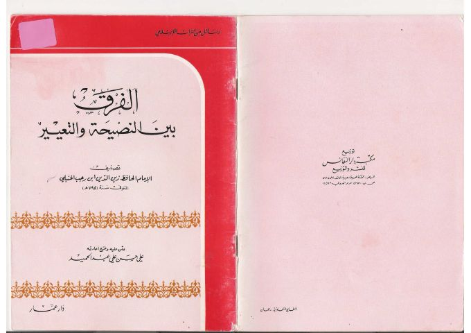

الفرق بين النصيحة والتعيير
Authors: ابن رجب الحنبلي
Editors: علي حسن علي عبد الحميد
Publishers: دار عمار
Download Downloads need an internet connection.
- Country
- عمان، الأردن
- Edition
- 1
- Volumes
- 1
- Pages
- 29
- Type
- كتاب
- Category
- الثقافة الإسلامية
Description
**▫️ العنوان: الفرق بين النصيحة والتعيير** ▪️ المؤلف: #ابن_رجب_الحنبلي ▫️ المحقق: #علي_حسن_علي_عبد_الحميد ▪️ الناشر: #دار_عمار ▫️ بلد النشر: عمان، #الأردن ▪️ الطبعة: 1 ▫️ عدد الأجزاء: 1 ▪️ الصفحات: 29 ▫️ نوع الوعاء: #كتاب ▪️ التصنيف الرئيسي: #الثقافة_الإسلامية ۪